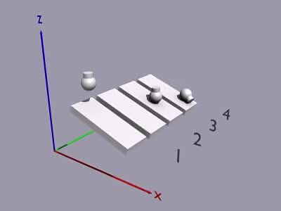

Projects

Physics Engine
- Designed a physics engine that simulates realistic physical interactions by accurately modeling forces, collisions, and material properties
- Implemented advanced algorithms for dynamic response and precise calculations to ensure smooth and believable object behavior
- Ensured to be able to handle complex simulations efficiently, integrating seamlessly with various applications
"6 Degrees Of" Game
- Utilized multiple programming languages and libraries to simulate a game where users find the shortest connection between two actors or actresses through their movie roles
- Leveraged the extensive IMDb database to produce a system that identifies the optimal path connecting these individuals based on their filmography
- Combined data retrieval and complex algorithms to offer a compelling and interactive experience in exploring cinematic networks
.jpeg)
Instagram Follower/Following Comparison
- Designed to analyze Instagram accounts to identify both followers and the accounts followed, then cross-references this data to pinpoint individuals whom the user follows but who do not follow back
- Provided a clear list of non-reciprocal follow relationships, offering insights into social media interactions
- Streamlined the process of managing follow connections and optimizing engagement strategy